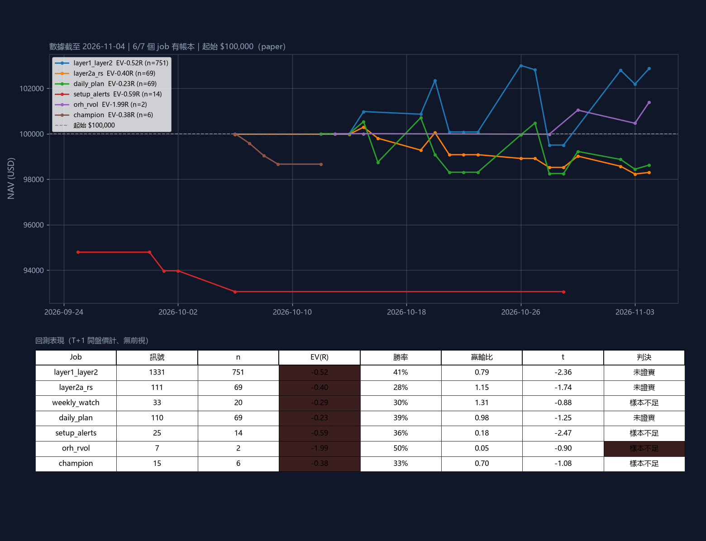

繁體中文版｜骨架蒸餾自 NEL · Market console（逆向工程）｜資料 2026-11-03 19:00

1TDiU6Wt0YYo…｜gid 634720175｜嵌入失敗時請直接開原 Sheet| 日期 | 2026-11-03 |
| 指數燈 | SPY ● QQQ ● IWM ● |
| 站上 20/50/200MA | 72.0% / 66.4% / 65.0% |
| 新高 / 新低 | 189 / 52 |
| 廣度判斷 | 參與度廣 — 突破可靠性高 |
| 領導 | 半導體 SOXX/SPY 相對 60 日 -12.1% — 領導力轉弱 |
| VIX | 恐慌升溫（高於全部均線）= 收細倉位 |
| 資料 | 2026-11-03T18:40:34.365865 |
| 範圍 | S&P500 (503 loaded) |
| Regime | NEUTRAL |
| Posture | FLAT_WATCH |
| 狀態 | WATCH_ONLY |
| 多空比 | 2.62 |
| ADL | 22.4 |
| 新高新低淨值 | 19.0 |
| 站上 40MA | 72.1% |
| SPY 收市 | 752.10 |
| 備註 | 儲住彈藥，等信號：冇符合 Setup C（<=50MA-2ATR）嘅均值回歸候選之前 = WATCH_ONLY |
| 日期 | 11/2/2026 |
| 升 4%+ 家數 | 318 |
| 跌 4%+ 家數 | 411 |
| 升/跌 比 | 0.77 |
| 5 日比率 | 0.99 |
| 10 日比率 | 1.01 |
| 升 25%+ (季) | 699 |
| 跌 25%+ (季) | 1,447 |
| 代號 / 行業 | 收市 | X（21EMA） | Y（ATRX） | ATR 帶 | 買入區 | 疊加 | Kell 階段 | 1CM 評級 |
|---|---|---|---|---|---|---|---|---|
| CAKE↗ | 112.64 | +0.45 | +0.92 | ★ 買入區 | 5 | ② Wedge Pop | C 邊緣 2/5 | |
| TEN↗ | 53.85 | +0.70 | +2.11 | ★ 買入區 | 5 | ③ EMA Crossback | B 觀察 3/5 | |
| QLYS↗ | 224.12 | +1.57 | +3.07 | — | 4 | ② Wedge Pop | C 邊緣 2/5 | |
| KNSA↗ | 92.24 | +1.76 | +2.50 | — | 4 | ② Wedge Pop | C 邊緣 2/5 | |
| ECO↗ | 101.33 | +1.78 | +3.78 | — | 4 | ③ EMA Crossback | B 觀察 3/5 | |
| HRI↗ | 165.76 | +2.57 | +2.77 | — | 4 | ② Wedge Pop | B 觀察 3/5 | |
| AXGN↗ | 49.37 | +3.68 | +2.80 | — | 4 | ⑤ Exhaustion Extension | B 觀察 3/5 |